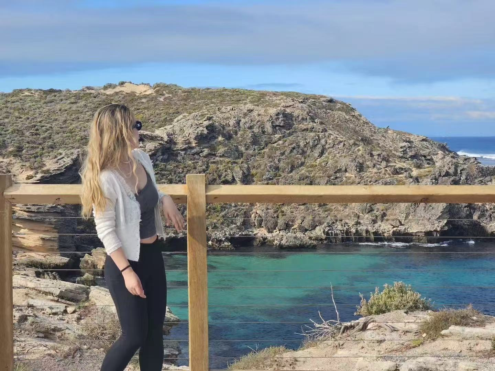
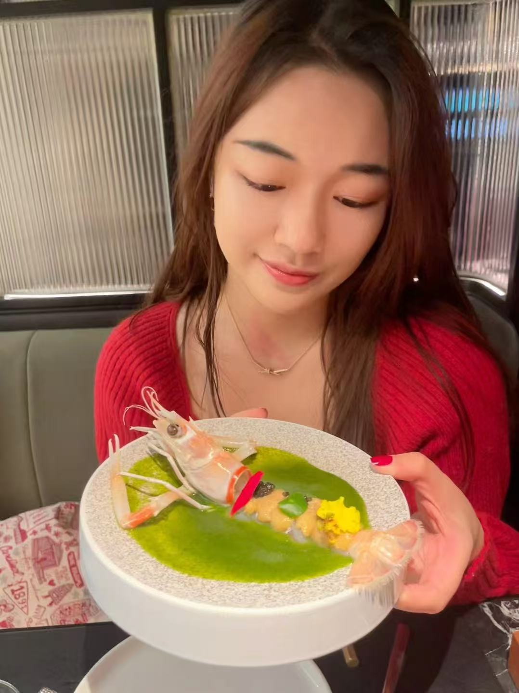

Growth & product analytics / AI-enabled workflows
Nuonan Zhang
I connect marketplace behavior, product experiments, and AI-powered analytics workflows to help teams make clearer growth decisions.


Quick read
Professional enough for recruiters, personal enough to feel like me.
My work spans local services, e-commerce, car rental, SaaS customer experience, and AI analytics products. I like turning ambiguous questions into metrics, experiments, workflows, and recommendations people can actually use.
Explore the site
A five-part view of my profile
Professional experience
Recent-first work across AI analytics, product, and marketplace growth
Chicago EAC, TikTok, Actian, Meituan / Dianping, Alibaba local services, Trip.com car rental.
Selected projects
Evidence-first analytics, modeling, and business case work
Project stories framed around problem, approach, tools, and output.
AI workbench + skills
A governed analytics assistant and the toolkit behind it
LLM workflows, SQL guardrails, DuckDB, Python, experimentation, BI, and product analytics skills.
Academic
Brandeis MSBA, awards, and applied analytics projects
Academic recognition plus project work in modeling, case analysis, and management recommendations.
Personal life
Curiosity, travel, design, and the human lens behind the numbers
Travel, design, curiosity, and the human lens behind the numbers.